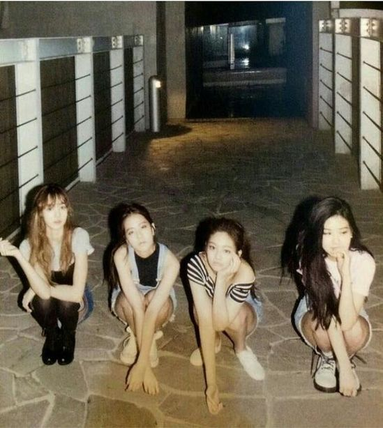

Мои любимые к поп группы
BLACKPINK
- Название фандома: блинки
- Название дебютного альбома: Square one, Square two
- Кол-во участниц: 4
- Имена мемберов: Розэ, Лиса, Джису, Дженни
- Дата дебюта: 2016, 8 августа
- Топ 7 популярных песен: Ddu-du-ddu-du As if its your last Kill this love How you like that Shut down Boombayah Pink Venom
- Пре-дебютное фото: 
- Лайстик:

Блэкпинк- к поп гёрл группа, дебютировшая в 2016, в YG Enternaiment. В группе, сначало планировалось 5 участниц: Миён, Лиса, Розэ, Джису и Дженни, но Миён покинула компанию (сейчас она участница джи айдл). Своими хитами девочки взрывали интернет, они стали очень популярны. Контракт группы уже закончился,но они продлили его. Продлили только, как группа, но сольным продвижением девочек будут заниматься другие компании.
Как им удалось стать такими популярными ?
Благодоря уникальности каждой девочки группа стала бить рекорды. У каждый участницы свой талант, и вместе они одно целое. Плюс людям нравится их концепт, компания делает хорошие клипы и песни.
Популярность не только, как айдол
У всех девочек очень много наград. Они часто побеждали на премиях, являются амбассадорами многих дорогих брендов, получали награды в номинациях таких, как например: Розэ- зоотой голос Кореи,и так далее. Блэкпинк рекламируют буквально всё, особенно в Азии. Ещё они выступали на Коачелле. У бп есть много фитов с другими звёздами.
Другая сторона популярности
Конечно же очень много хейта. Хэйт есть всегда, особенно если ты популярный. У девочек, в особенности у Дженни было очень много хейта. Их называли ленивыми, хейтили за вес и фигуру, за английский. Конечно же это стресс. С этим тяжело справляться. Ходили слухи, что Джису из блэкпинк хотели убить, сталкер хотел уже приехать в Корею, но наступил карантин.
Фильмы и шоу с их участием
- Blackpink house
- Weekly idol.EP 277
- MBC Section TV Idol Men
- My Little Television EP 98-99
- Circus girl' (Rose)King of masked singer EP 104-105
- Get it Вeauty 2017 EР 2
- K-POP STAR 6
- Blackpink 24/365
- Light up the sky
Список песен
- You never know
- Kill this love
- How you like that
- Lovesick Girls
- As if its your last
- Pretty savage
- Boombayah
- Type girl
- Shut down
- Pink Venom
- The Girls
- Whistle
- Ddu-du-ddu-du
- Love to hate me
- Hard to love
- Forever young
- Kiss and Make up
- Tally
- Hope Not
- See u later
- Really
- Yeah Yeah Yeah
- Kick it
- The Happiest girl
- Crazy over you
- Sour candy
- Ready for love
- Dont Know what To Do
- Playing with Fire
- STAY
- Bet you wanna
Также у многих песен есть японская версия.
Список всех альбомов и мини-альбомов блэкпинк
- Square one
- Square two
- Born pink
- The Album
- Square Up
- Kill this Love
- How you like that
- Blackpink arena tour 2018 "Special final in Kyocera Dome Osaka"
- Blackpink in your area
- Blackpink 2021 " The Show" Live
- Blackpink 2018 Tour "In Your Area" Seoul
- BLACKPINK 2019-2020 WORLD TOUR IN YOUR AREA -TOKYO DOME- (Live)
- Kill This Love - EP
- SQUARE UP - EP
- Square Two - EP
- BLACKPINK 2018 Tour In Your Area Seoul
- Re: BLACKPINK
- BLACKPINK - EP
- BLACKPINK: THE SHOW
- BLACKPINK LIVESTREAM CONCERT: THE SHOW
- THEBEST
- BORN PINK [Clean]
Также есть и японские версии
Подробнее о каждой участнице
Лиса
Полное имя Лисы - Лалиса Манобан. Лиса прошла прослушивание, когда ей было 14 лет. После одобрения заявки она улетела в Корею и стажировалась там 5 лет. Лиса невероятна талантлива: она очень хорошо танцует, прекрасно читает рэп, она весёлая и у неё замечательная харизма. Также мне кажется у неё красивый вокал. Сейчас Лисе 26 лет, но в марте 27 ей будет 27. Лиса стала популярной благодоря её харизме, танцам и вообще её особенностью. Она родом из Таиланда и для Корейских жителей это необычно. У Лисы много наград такие, как :22 ноября 2023 года король Карл III посвятил Лалису Манобан в почётные члены ордена Британской империи, она создала свою компанию, ей вручили награду за самое лучшее соло, Лиса Манобан из Blackpink вошла в Книгу рекордов Гиннесса благодаря своему хиту «Money». Песня достигла 1 млрд прослушиваний на Spotify, чего ранее не удавалось ни одному сольному k-pop-артисту, также ещё много номинаций. Шоу, которые посещала Лиса: Lisa Tv, у Лисы есть канал на Ютуб, Real Man 300, Youth With You, Youth With You 2 и различные интервью. Песни Лисы: Money, Lalisa, SG (с участием Лисы). Как и у любого айдола, у Лалисы много хейта, её хейтят за всё: она слишком популярна, она тайка, за открытою одежду, за её фигуру, за вес, буквально за всё. Но Лиса не сдаётся ведь у неё много фанатов.

Розэ
Полное имя Розэ- Пак Чеён. Она кореянка, но родилась и жила в Новой Зеландии. Розэ прошла послушивание, когда ей было почти 15. Её папе надоело постоянное пение Розэ и они пошли на прослушивание. У розэ ангельский голос и она хорошо играет на гитаре, также классно танцует. Сейчас Розэ 26, но 11 февраля будет 27. Розэ популярна благодоря её вокалу, она очень милая и эмоциональная. Розэ является членом ордена Британской империи, у неё есть нагррада: Золотой голос Кореи. Песни Розэ: Gone, On the Ground, Eyes Closed, Until I found you, LET IT BE ~ YOU & I ~ ONLY LOOK AT ME. И у Розэ ооже много хейта: за её фигуру, вес, внешность, голос. Но Розэ остаётся милой и очень доброй. Удачи ей во всём.

Дженни
Полное имя Дженни - Дженни Ким. Дженни родилась в Корее, но когда ей было 10 они переехали в Австралию. Дженни прошла прослуш вание в 15 лет и стажировалась почти 6 лет. Сейчас Дженни 28, её день рождение 16 января 1996. Дженни разносторойний человек: она милая, бывает томбой, прекрасный вокал, харизма, танцы и реп. Дженни является членом Британской империи, Дженни выигровала на многих премиях. Вместе с ней выпущен сериал Айдол, и она участвовала во многих мероприятиях. Песни Дженни: Solo, You and Me, One of the Girls, GG BE&. У Дженни было ОЧЕНЬ много хейта. Её хейтили за фигуру, вес, за то что она ленится, за характер, вокал, танцы, вообще за то что она существует. Это очень тяжело. Дженни достигла очень многого. Основала свою компанию, многие известные люди могут ей позавидовать. Пусть Дженни сияет всё ярче.
Джису
Полное имя Джису - Ким Джису. Джису родилась и жила в Корее. Прошла прослушивание в 16, и стажировалась 5 лет. Джису изначально хотела стать актрисой, но передумала. Сейчас Джису 29 лет. По мнению хейторов Джису самая неталантливая участница группы, но это не правда. У Джису прекрасный голос и все навыки очень хорошие. Думаю она могла бы быть хорошим лидером. Она добрая, поддерживает, успокаивает, смешная, очень милая. Её часто называют мамой. Джису взорвала интернет своим хитом Flower, затем ещё выпустила трек All eyes on me. Джису тоже хейтят, нетизенам не нравится её английский, вокал, танцы, фигура и внешность. Но Джису всё же остаётся доброй и спокойной. Она часто не показывает свои эмоции. Я бы хотела себе такого друга, как Джису.

Позиции мемберов Блэкпинк:
| Lisa | Rose | Jennie | Jisoo |
|---|---|---|---|
| Main dance | Main vocalist | Main rapper | Lead vocalist |
| Lead rapper | Lead dancer | Lead vocalist | Visual |
| sub-vocalist | Center | ||
| Maknae |
Блэкпинк- моя любимая женская к поп группа, которой я всегда вдохновлялась. Надеюсь эта статья была для вас полезной. Статья написана: 9.02.2024